In this writing, I want to share how renaming one page and one visual inside a PBIR report showed me that a report object has two names, and that they are used by two different readers.
The plan was deliberate. I already expected the folder name and the name property inside each JSON file to be tracked separately, and I wanted to prove that rather than assume it. So I ran the rename in three stages and changed one thing at a time: the object name on its own, the folder on its own, and then both together. The question I wanted answered was narrow. Which of those three changes actually makes a pull request readable to the person reviewing it?
1. Nine Folders, Four Cards, and No Way to Tell Them Apart
My Contoso project has a report with two pages. On the canvas they are obvious. The first page is called Overview and carries four cards across the top: Sales Amount, Gross Margin, Gross Margin %, and Order Count.
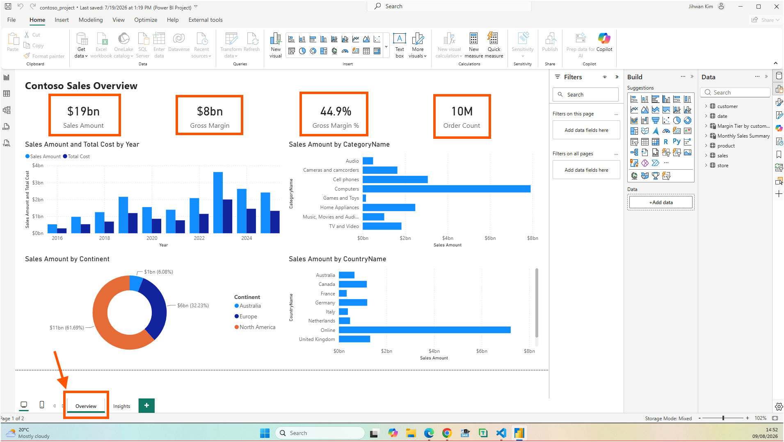
Then I opened the same report in VS Code.
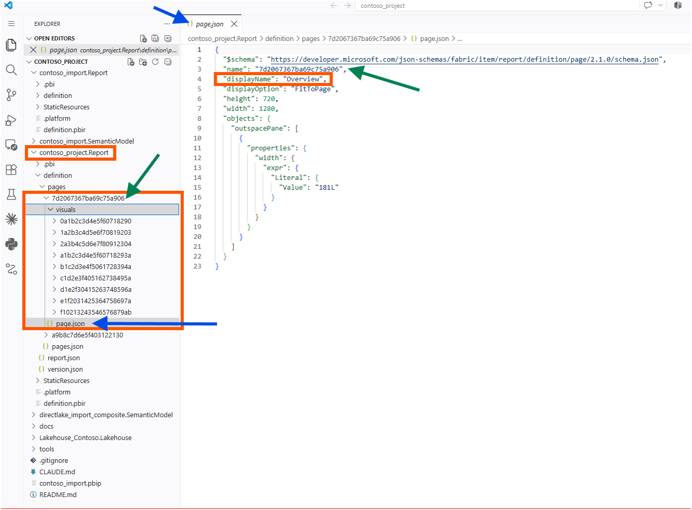
The page lives in a folder called 7d2067367ba69c75a906. Inside it, nine visual folders, every one of them a twenty-character string. Four of those nine are the cards. Nothing in the folder tree tells me which is which.
The page.json file does carry a readable value. Its displayName is Overview. But displayName is not what the folder is named after, and the folder is what a reviewer sees first.
pages.json makes the same point more sharply, because it stores nothing but names.
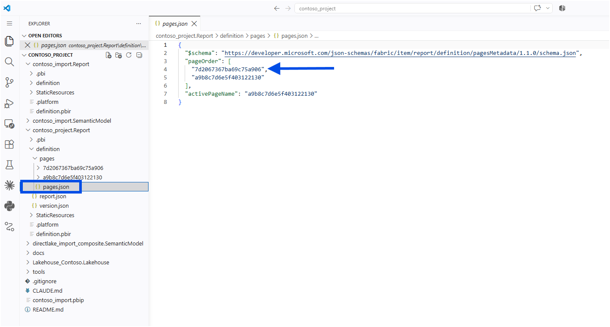
{
"pageOrder": [
"7d2067367ba69c75a906",
"a9b8c7d6e5f403122130"
],
"activePageName": "a9b8c7d6e5f403122130"
}If a colleague reorders the pages in Desktop and commits, that change shows up as two hex strings swapping position. Nobody can approve that without opening the report.
2. What the Documentation Permits, and What It Warns About
Microsoft documents this directly. In the PBIR naming convention section of the Power BI Desktop project report folder article, pages, visuals, and bookmarks by default use their report object name as their file or folder name, and those object names are initially a twenty-character unique identifier. The article uses 90c2e07d8e84e7d5c026 as its example. The same section says these names can be renamed to friendlier ones.
That permission comes with three conditions, all in the same section. Renaming the name property is supported but might break external references inside and outside the report. The name must consist of word characters or hyphens. And after renaming any PBIR file or folder, Power BI Desktop has to be restarted, after which it keeps the new names when saving.
The character rule is the one worth taking seriously, because breaking it fails quietly. Under Common PBIR errors, the article answers the scenario "After rename visual or page folder names, my visual or page no longer appears when opening the report." The cause is a name that does not follow the convention, and Desktop then ignores that file or folder and treats it as a private user file. A space in the name is enough to trigger it. Sales_Overview is safe. Sales Overview is not.
3. Stage One: Renaming the Page Object Name Only
I closed Desktop and edited two files. In page.json, line 3 became "name": "Overview". In pages.json, the matching entry inside pageOrder became "Overview".
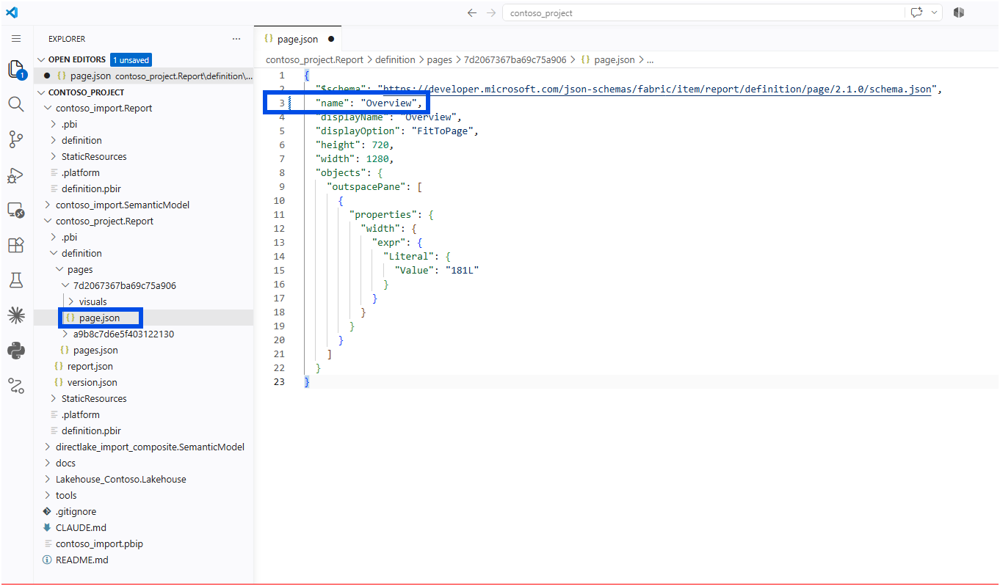
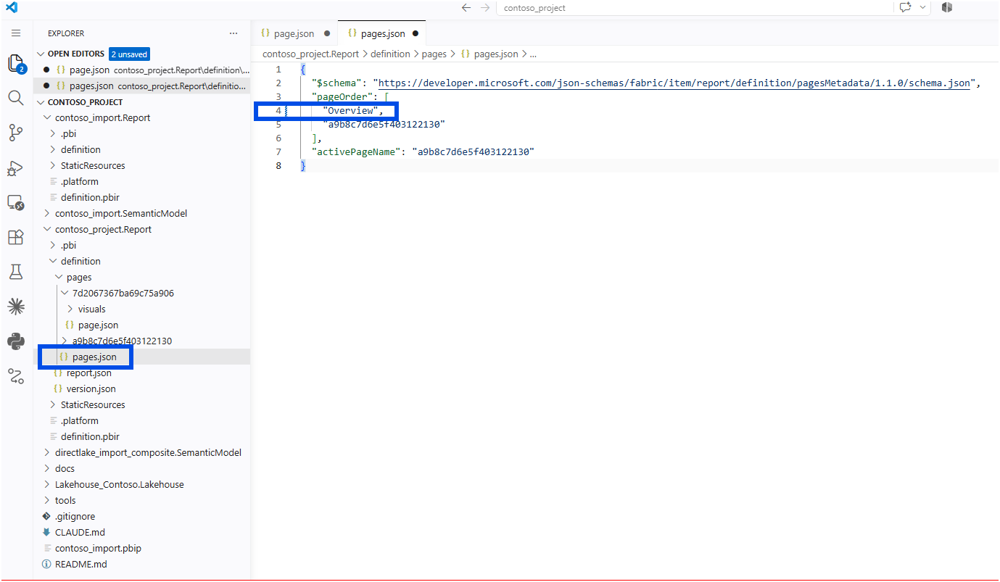
I left the folder alone on purpose. It stayed 7d2067367ba69c75a906.
The Git diff was exactly what I hoped for.
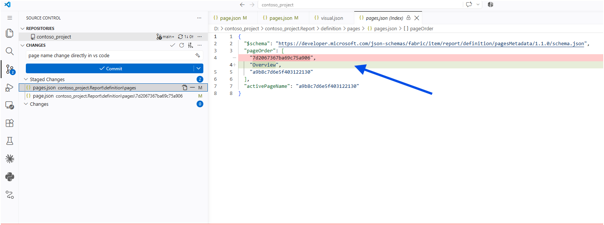
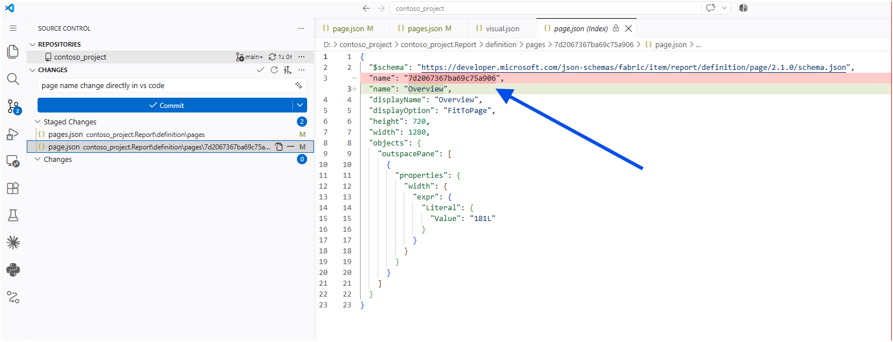
Desktop reopened without any error, and the Overview tab behaved normally.
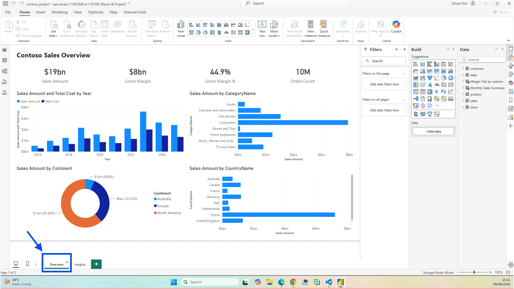
After committing, the Service rendered the report and listed both pages correctly.
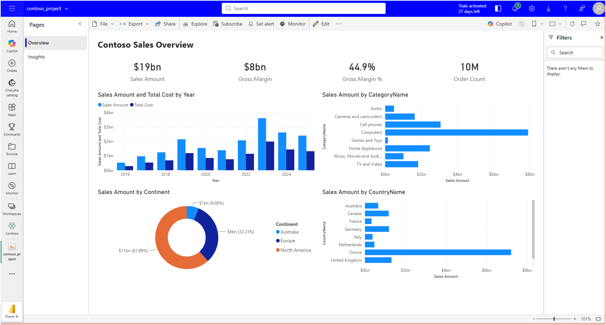
Here is what that tells me. The folder was still called 7d2067367ba69c75a906 while the name inside the file now said Overview, and Power BI was completely fine with it. The folder name and the object name do not have to match. That was the first thing I wanted to know, and it worked in both Desktop and the Service.
But one problem was still there. Look at the file path shown above the page.json diff. It still reads pages > 7d2067367ba69c75a906 > page.json. I could now read what changed, but not where it changed. In a pull request, the list of changed files is the first thing a reviewer looks at, and that list was still full of hex.
4. Stage Two: Renaming the Visual Folder Only
For the second stage I did the opposite. I picked the Sales Amount card, whose folder was b1c2d3e4f5061728394a, and renamed the folder to Card_SalesAmount. This time I left "name" inside visual.json untouched.
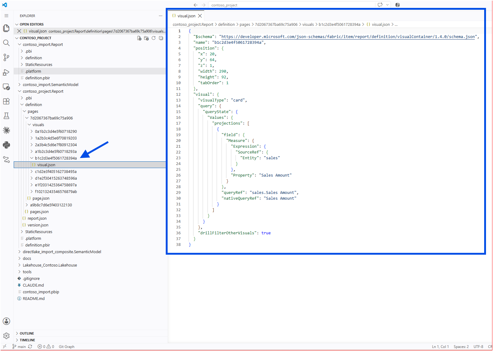
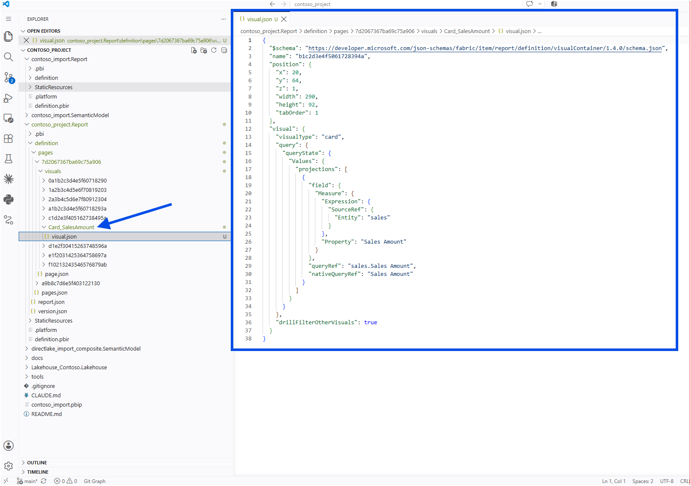
Before I staged the change, VS Code showed it as a deleted file plus a brand new untracked file, rather than as a rename.
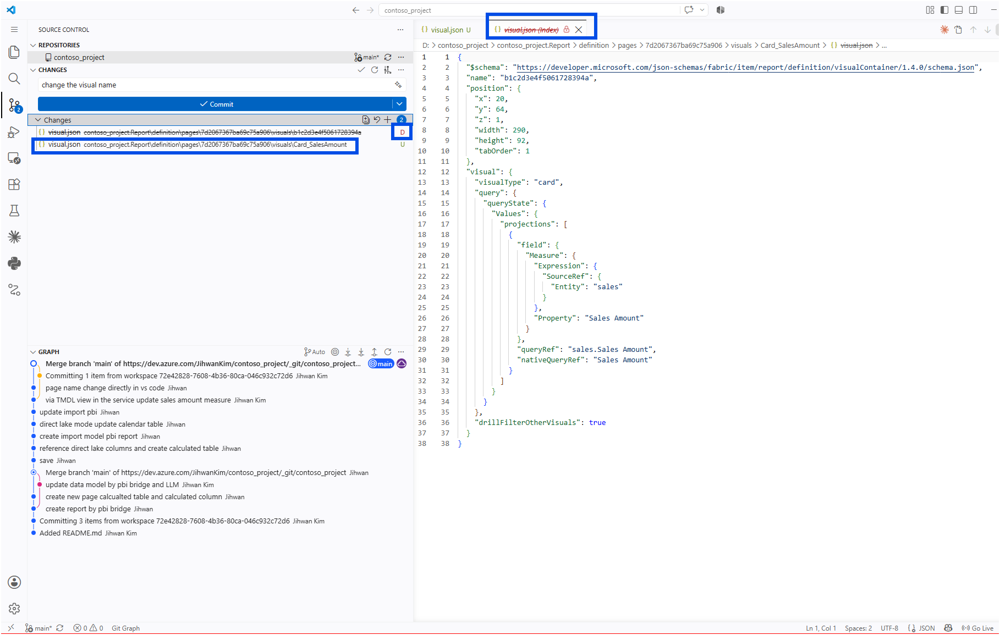
After committing, I wanted to know how Git had recorded it, so I opened the terminal in VS Code and asked, where 1f9f57f is the ID of my rename commit:
git show --summary --find-renames 1f9f57f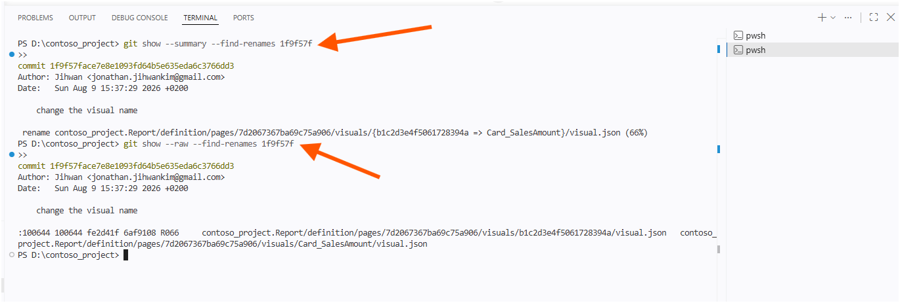
Git had recorded it as a rename, with the old folder name on the left of the arrow and the new one on the right. The (66%) on the end is what the git diff documentation calls the similarity index, its measure of how much of the file stayed the same. A rename on its own would have scored higher. Mine came in lower because I had opened the report in Desktop before committing, and Desktop had written its own changes into the same file. The schema version moved from visualContainer/1.4.0 to 2.11.0, height and width swapped places, and a filterConfig block appeared.
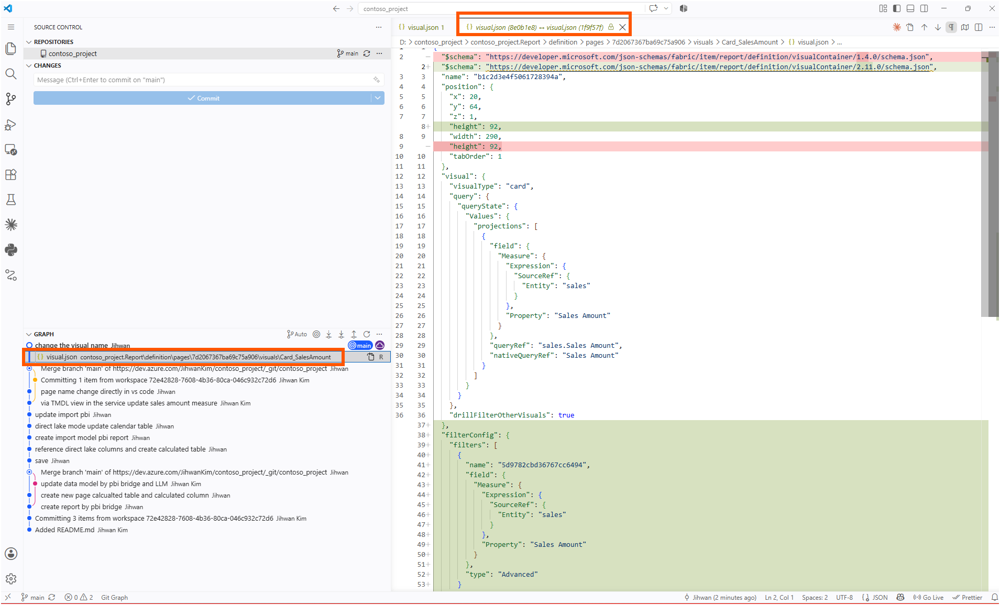
My rename ended up buried inside a pile of edits I never made.
That is worth turning into a small rule. Rename the folder, commit that on its own, and only then open Desktop. One commit that says one thing is far easier to review than one commit that says three.
Then I checked the rename from the other direction, using the Copy object name command that the Copy report object name section of the same article describes. You switch it on once under File, Options and settings, Report settings, and it adds a right-click entry on any report object.
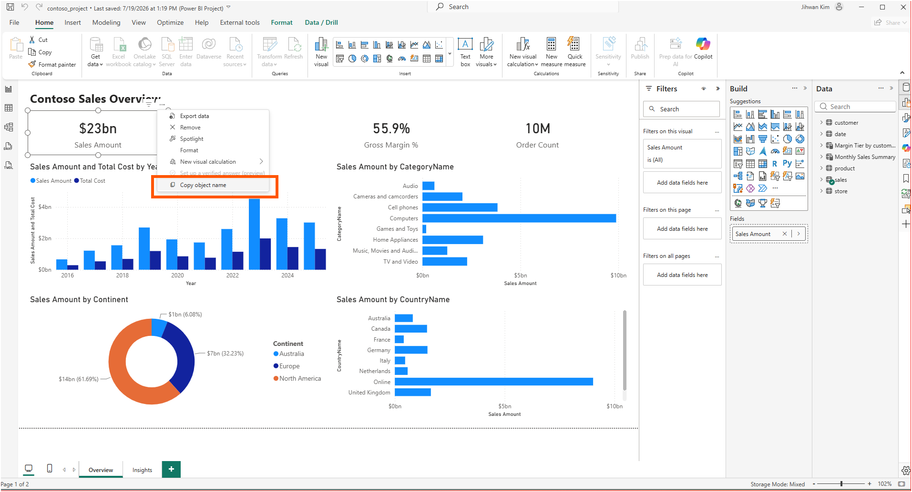
I pasted the result into Notepad.
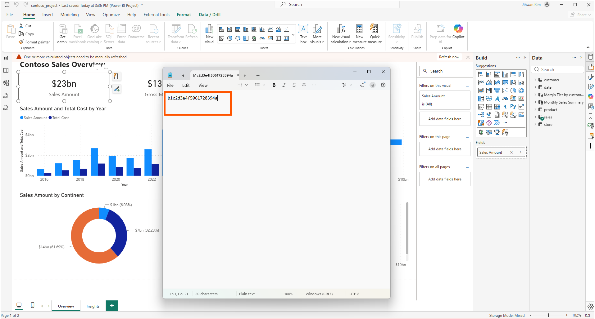
It gave me b1c2d3e4f5061728394a. Twenty characters, as the status bar confirms. The folder said Card_SalesAmount, but Power BI still handed me the old identifier, because Copy object name reads the name property and I had not touched it.
This was the aha moment that turned my expectation into a working rule. The folder name is the one people read in a pull request. The name property is the one Power BI and scripts read. Changing only one of them leaves the job looking finished when it is not. Stage two is the trap. Everything opens, everything renders, and nothing warns you that half the rename is missing.
5. Stage Three: Making the Folder Name and the Object Name Match
The third stage was one line. Inside the renamed folder, "name" became "Card_SalesAmount", so the folder and the property now said the same thing.
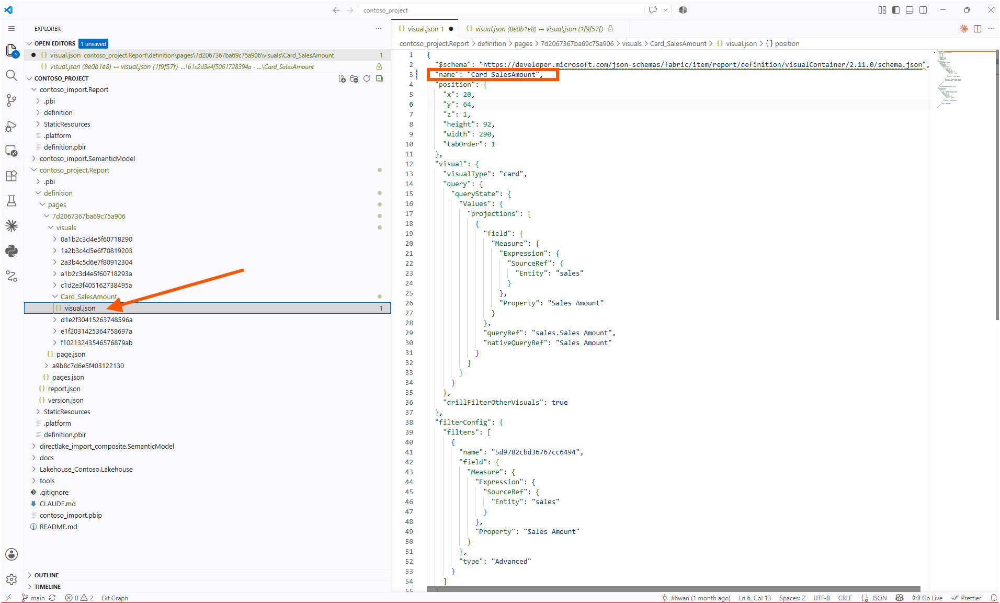
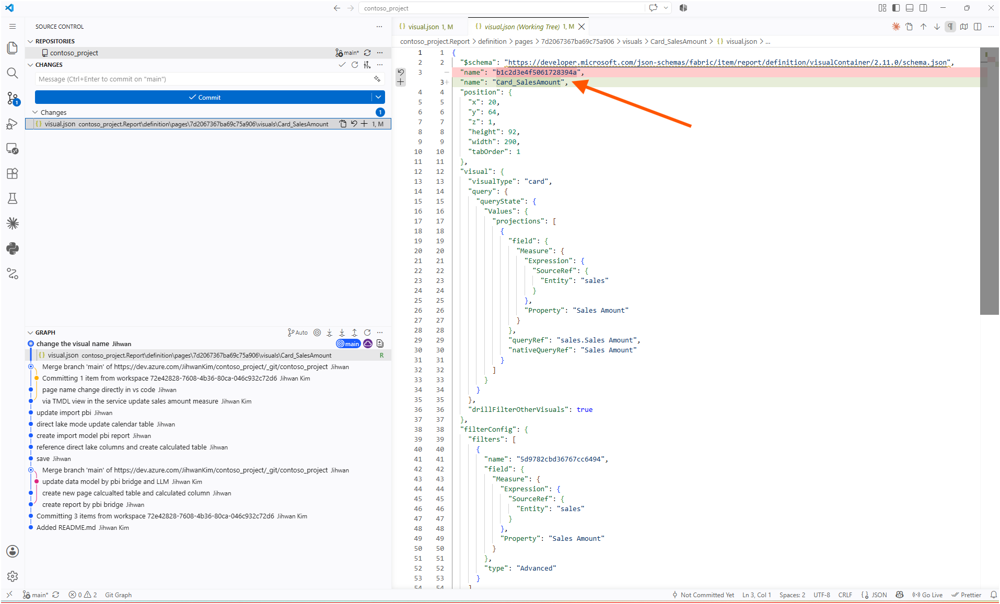
The commit was one added line and one removed line. Nothing else.
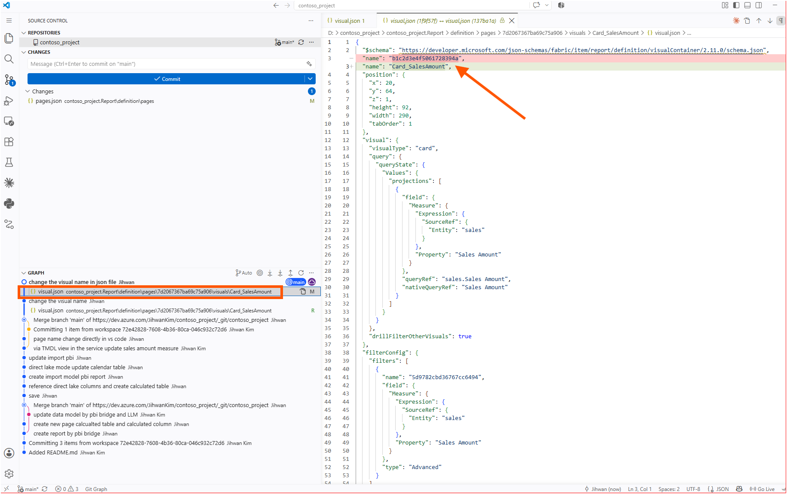
That screenshot is the one I keep coming back to, because the graph pane shows both of my commits together, each with a letter beside the file. The stage two folder rename is marked R for renamed. This one is marked M for modified. Git saw two different kinds of edit, and it is right about that. Renaming a folder moves a file to a new location. Editing name changes what is written inside it.
Then I ran Copy object name again.
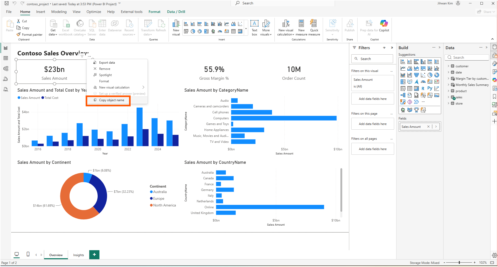
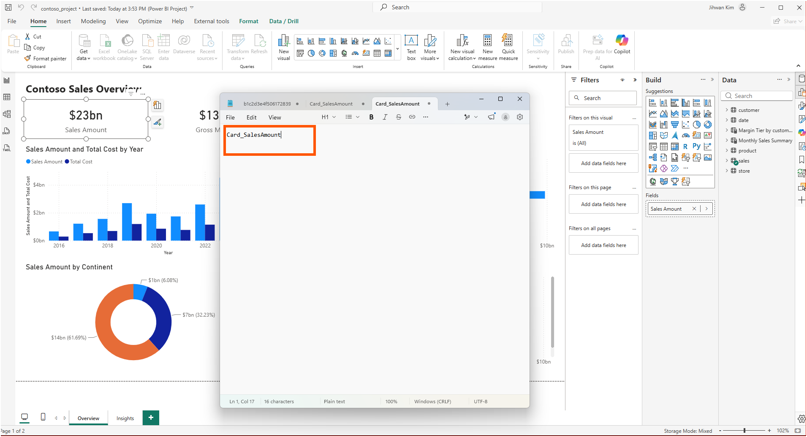
This time it gave me Card_SalesAmount. Sixteen characters. Watching that count drop from twenty to sixteen is the whole experiment in one detail.
6. What Power BI Desktop Did on Its Own
Two things happened without me asking, and both mattered more than I expected.
Desktop saved over the renamed folder and kept my new name. Card_SalesAmount survived a full write, which is what the naming convention section promises for renamed files and folders.
Then I found this waiting in my working tree:
- "activePageName": "a9b8c7d6e5f403122130"
+ "activePageName": "Overview"I did not write that line. Desktop did, during its own save, because Overview was the active page at the time. In my project at least, Desktop now writes my new name back into the file rather than just putting up with it.
7. From a DevOps Standpoint: This Is Foundational
From a DevOps standpoint, this is foundational, because a report is only reviewable when a reviewer can tell what changed without opening it.
Code review. When a pull request touches visuals/Card_SalesAmount/visual.json, the reviewer knows which visual changed before reading a single line. The same change under visuals/b1c2d3e4f5061728394a/visual.json tells them nothing. When a reviewer cannot tell what a file belongs to, what usually happens is that they approve it without really checking it. Readable folder names are what make a real review possible.
Version control. Git records a folder rename and a property edit as two different operations, the R and the M from the screenshot above. Keeping them in separate commits means the history reads like a list of decisions. My stage two commit mixed a rename with a Desktop save and came out at 66% similarity, which still works but is harder to read than it needed to be.
Automation. Copy object name is what connects a visual on the canvas to its file in the repository, and the value it gives you is the name property. Any script that finds a visual by its name depends on that same value. If the folder says one thing and name says another, a person browsing the repository and a script searching it will disagree about which visual they are looking at.
One caution before anyone runs this across a real report. The naming convention section warns that renaming the name property may break references elsewhere. Bookmarks store the visuals they point at, and drillthrough and page tooltips depend on page bindings. My report has no bookmarks, so my three stages never tested that case. On a report that does have them, rename the visual and its bookmark references together, and check that the report still opens before committing.
Closing Thoughts
This experience left me with a new mental model: every PBIR object has two names, one that people read and one that software reads, and a rename is only done when I change both.
The folder name is what a reviewer sees in a pull request. The name property is what Desktop, the Service, and every script look for. Change one without the other and you get a report that opens perfectly and reviews badly, and nothing in the product will tell you.
The whole change was three files, four lines, and a Desktop restart. For a report heading into a repository where other people will review it, that is a very small price for a file list you can actually read.
I hope this helps having fun in exploring PBIR object names and embracing this new era of Power BI reports that review like code!